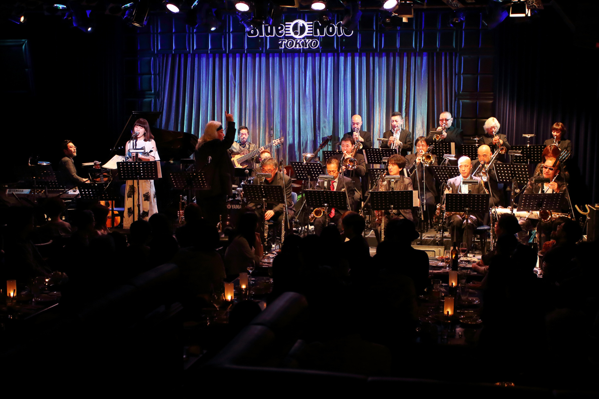

爵士搖擺夜
日期：05月19日（六）
地點：桃園藝文廣場
臺北爵士大樂隊
成立於2009年的 ★臺北爵士大樂隊 / Taiepi Jazz Orchestra★（簡稱TJO），由薩克斯風演奏家李承育擔任音樂總監及指揮，成員則結合活躍於國內重要表演活動之古典、爵士、流行之職業樂手。目前該團每週固定團練，積極籌畫年度公演、校園及社區巡演、商業演出等各類音樂會，並設有不同類型的爵士演出團隊。自成立以來，多次與國際爵士名家如Gene Aitken、Eric Marienthal、Alex Sipiagin、Irene Atman、平賀真理香、Bernd Ruf等國際知名音樂家合作演出，專業、優秀的演出已將TJO晉升為台灣最具代表性之爵士大樂團。2011年發行首張樂團專輯《Knives Out》，DOWNBEAT爵士名人堂Gene Aitken擔任製作人、葛萊美獎錄音師Jim Linahon擔任錄音師，專業陣容，完美呈現；2014年發行 朱渱琪&台北爵士大樂團《玫瑰玫瑰我愛你》。

爵士搖擺夜
日期：05月20日（日）
地點：桃園藝文廣場
東京藍調全明星爵士大樂團
東京藍調俱樂部（Blue Note Tokyo）成立於1988年，位於日本東京都港區（日語：港区／みなとく）最高級地段的青山，是一個聚集著諸多外國大使館、眾多高級商店街，國際氣氛濃厚的地區。東京藍調全明星爵士大樂團（Blue Note Tokyo All-Star Jazz Orchestra）由東京藍調俱樂部於2011年所組建，由夏威夷出生的小號手Eric Miyashiro所領導，集結日本最優秀的爵士音樂家們於一體的最大型樂隊。東京藍調全明星爵士大樂團的每一場演出都是精湛的演出，個性十足，而演奏家輪流的演出更展現他們的豐富精湛的個人才華。 自成立以來，樂團一直與世界頂級爵士音樂家合作演出，其中包括Pat Metheny、Arturo Sandoval、Richard Bona、Makoto Ozone等。近幾年的演出廣受好評，2013年慶祝山葉音樂亞洲成立五十週年音樂會（YAMAHA Music 50 Concert）擔任重頭演出樂團；2014年在瑞士著名的蒙特勒爵士音樂節（Montreux Jazz Festival）上首次登台亮相，並獲得了良好的評價；2016年在亞洲最大的爵士音樂節 - 印尼國際爪哇爵士音樂節（Java Jazz Festival）演出，廣受國際爵士音樂的矚目。
